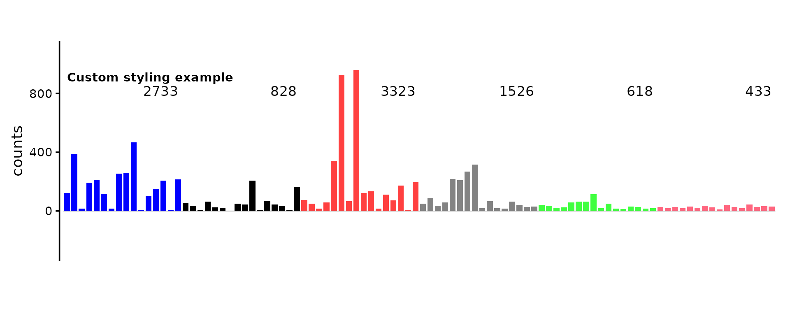
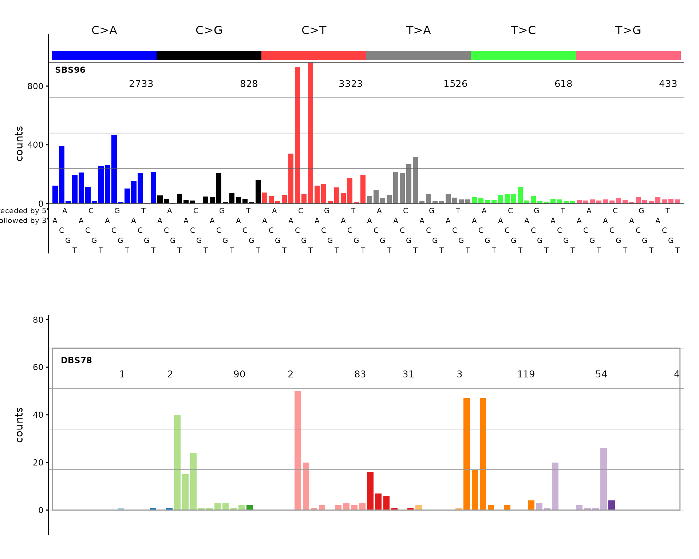

Introduction
mSigPlot creates publication-quality plots for mutational signatures and mutational spectra. It supports SBS (single base substitution), DBS (doublet base substitution), and indel catalogs across 10 classification systems.
Loading catalog data
mSigPlot works with numeric vectors, data frames, matrices, tibbles, and data.tables. Here we load three example catalogs bundled with the package.
SBS96 catalog
The 96-channel SBS catalog has one row per trinucleotide mutation context. The bundled example contains mutation counts from four HepG2 samples.
sbs96_file <- system.file("extdata", "sbs96_example.csv", package = "mSigPlot")
sbs96_df <- read.csv(sbs96_file)
# Build a named catalog: row names are the 96 canonical trinucleotide types
orders <- catalog_row_order()
catalog_sbs96 <- data.frame(
sample1 = sbs96_df[, 3],
row.names = orders$SBS96
)
head(catalog_sbs96)
#> sample1
#> ACAA 123
#> ACCA 390
#> ACGA 15
#> ACTA 194
#> CCAA 212
#> CCCA 113DBS78 catalog
The 78-channel DBS catalog covers all doublet base substitution classes.
dbs78_file <- system.file("extdata", "dbs78_example.csv", package = "mSigPlot")
dbs78_df <- read.csv(dbs78_file)
catalog_dbs78 <- data.frame(
sample1 = dbs78_df[, 3],
row.names = paste0(dbs78_df$Ref, dbs78_df$Var)
)
head(catalog_dbs78)
#> sample1
#> ACCA 0
#> ACCG 0
#> ACCT 0
#> ACGA 0
#> ACGG 0
#> ACGT 0ID83 catalog (COSMIC signatures)
The 83-channel indel catalog uses the COSMIC classification. This file contains COSMIC v3.5 reference signatures; each column is a signature.
id83_file <- system.file("extdata", "id83_cosmic_v3.5.tsv", package = "mSigPlot")
id83_sigs <- read.table(id83_file, header = TRUE, sep = "\t",
row.names = 1, check.names = FALSE)
# Pick one signature to plot
catalog_id83 <- id83_sigs[, "ID1", drop = FALSE]
head(catalog_id83)
#> ID1
#> DEL:C:1:0 1.598890e-04
#> DEL:C:1:1 7.735230e-04
#> DEL:C:1:2 3.310000e-18
#> DEL:C:1:3 1.907613e-03
#> DEL:C:1:4 7.059900e-04
#> DEL:C:1:5+ 3.370115e-03Plotting individual catalogs
SBS96
plot_SBS96(catalog_sbs96, plot_title = "HepG2 sample — SBS96")DBS78
plot_DBS78(catalog_dbs78, plot_title = "HepG2 sample — DBS78")
Customizing plots
All plot functions accept parameters to control appearance:
plot_SBS96(
catalog_sbs96,
plot_title = "Custom styling example",
base_size = 14,
show_counts = TRUE,
grid = FALSE
)
Auto-dispatch with plot_guess()
If you don’t know (or don’t want to specify) the catalog type,
plot_guess() detects it from the number of rows:
plot_guess(catalog_sbs96, plot_title = "Auto-detected SBS96")
Multi-sample PDF export
For batch plotting, every plot function has a _pdf()
variant that writes a multi-page PDF with 5 plots per page. The
auto-dispatch version is plot_guess_pdf():
Combining plots
Since plot functions return ggplot objects, you can combine them
using packages like patchwork:
if (requireNamespace("patchwork", quietly = TRUE)) {
library(patchwork)
p1 <- plot_SBS96(catalog_sbs96, plot_title = "SBS96")
p2 <- plot_DBS78(catalog_dbs78, plot_title = "DBS78")
p1 / p2
}